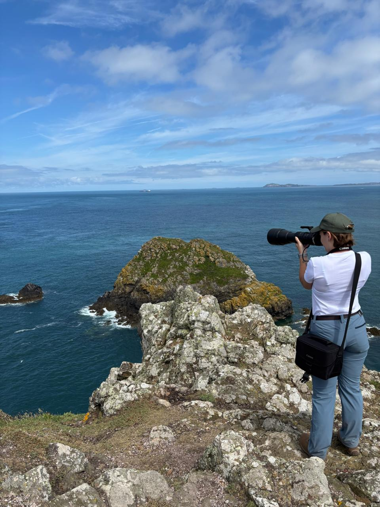

Fotografía de naturaleza
La vida silvestre vista por los ojos de Milagros. Cada foto, un instante de paciencia, luz y naturaleza.
Ver la galeríaExplorá por aves, mamíferos y más, o mirá todas las fotos

Desde las sierras de Córdoba, Milagros persigue la luz y el instante justo en que un animal se deja ver. Lo que empezó como paseos con la cámara se transformó en una forma de mirar el mundo con más calma.
Cada imagen de esta galería nace de horas de espera, silencio y respeto por la naturaleza. Bienvenido/a a su rincón de vida silvestre. 🐦